Gastronomía
La gastronomía japonesa es un reflejo de la cultura del país. Japón destaca por sus costumbres, sus tradiciones, su historia y su gastronomía. Es un país que trata las acciones del día a día de una manera diferente a como lo hacemos en Occidente. Todo tiene su proceso, y es a raíz de esa metodología por la que dicen obtener los mejores resultados.
Con su gastronomía no es diferente, y es que en Japón la comida es un culto y su preparación todo un ritual. Desde el principio, donde se seleccionan alimentos basándose en la armonía, hasta el momento de servirse, donde cada plato tiene su recipiente, sus herramientas y su manera de ser saboreado.
La comida japonesa se ha popularizado mucho gracias a la gran difusión que tienen las series, películas y documentales del país. Las series animadas o anime, por ejemplo, muestran los platos con gran detalle, y esto hace que los fans se muestran abiertos a experimentar nuevos sabores.
A lo largo de la historia, la cocina japonesa siempre ha estado influenciada por otras culturas,
como China, Corea y el Imperio Británico (el curry fue traído por los británicos de la India),
incluso los rollos de Estados Unidos y California son producto de inmigrantes japoneses a la costa oeste de
América del Norte.
Obviamente, la vida en las islas se ve completamente afectada por el mar, y en Japón se puede comer casi
todo lo que produce el océano: peces y algas.
Se trata de una cocina muy sana, caracterizándose por ser menos grasosa y por utilizar mucho más el pescado.
La base de la comida japonesa es el arroz que se combina con otro tipo de platos que utilizan productos frescos de cada temporada. Una de sus principales características es utilizar formas de cocción que tratan de potenciar los sabores naturales de los diferentes alimentos. Así encontramos la cocción al vapor, a la plancha o frita (utilizando muy poco aceite y buscando texturas crujientes) y también a la cazuela.
Un menú típico japonés se basa en la fórmula "una sopa + tres platos". Una pieza de fruta se suele servir como postre al final. Esto puede variar dependiendo de, si es una comida especial como, por ejemplo, una comida familiar, en donde suelen preparar platos más elaborados. O si, simplemente, es comida para llevar al trabajo.
Platos típicos
Te dejamos una lista de 8 platos que, como turistas, no nos podemos perder.
-
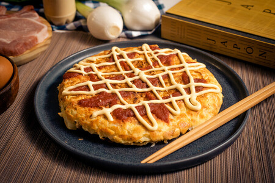
Okonomiyaki
Uno de los platos clásicos del street-food japonés que está ganando cada vez más adeptos entre los comensales españoles y europeos es el okonomiyaki.
El okonomiyaki se cocina a partir de una masa de harina, agua, repollo y huevo.
Algunos de los ingredientes más comunes que se la añaden son la cebolla de verdeo o cebolleta, carne picada, queso, mochi, gambas, pulpo, etc. Aunque admite una amplia variedad de ingredientes en todas sus formas.
Finalmente, el plato se sirve con salsa de okonomiyaki, katsuobushi (pescado seco), nori (algas secas) y mayonesa, con la idea que cada cliente lo condimente a su gusto.
-
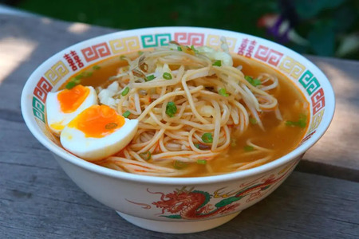
Ramen
El ramen es un plato de fideos japonés.
Si bien cada región de Japón tiene su propia receta de ramen, la preparación básica consiste en distintos tipos de fideos japoneses servidos en un caldo preparado comúnmente a base de hueso de cerdo o pollo y distintas verduras, sus sabores varían entre la pasta de miso, salsa de soya o sal, contiene diferentes guarniciones como rebanadas de carne de cerdo, algas marinas, menma y cebolleta.
El ramen se ha integrado con tal fuerza en la gastronomía japonesa que en Taiwán se considera un producto netamente japonés. Suele consumirse en establecimientos de comida rápida, en puestos ambulantes o en casa, siendo uno de los alimentos más baratos que se pueden conseguir.
-
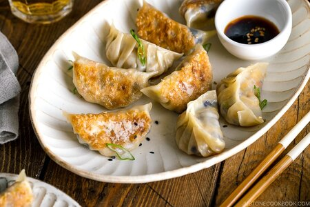
Gyozas
Las gyozas o más conocido por las “empanadillas japonesas” es un plato típico de la cocina oriental. Tienen su origen en la gastronomía china, en donde se las conoce como dim-sum.
Las gyozas suelen ser una masa rellena, principalmente, de carne y vegetales al vapor o a la plancha, pueden estar condimentadas con jengibre. Su cocción original es, dorarlas en una sartén y luego, agregar un poquito de agua para que se terminen de cocinar al vapor. Además, suele presentarse en el plato con alguna salsa como es el vinagre de arroz y aceite de sésamo.
-
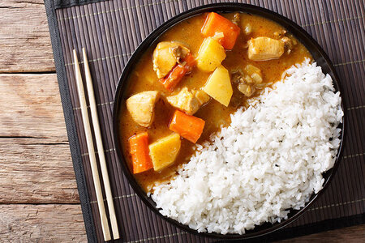
Kare Raisu
El curry es uno de los platos más populares de Japón. Suele servirse junto con arroz y tonkatsu u otros acompañamientos, pero también existen platos basados en curry que no utilizan karē udon (fideos gruesos) o karē-pan (pan de curry), pero no son tan populares como el curry con arroz.
A diferencia del curry de la India, los japoneses elaboran la salsa con menos especias, hay variedades que van de un sabor más suave y dulzón hasta otras muy picantes.
El curry fue introducido en Japón por los ingleses durante la era Meiji (1869–1913), época en la que la India estaba bajo administración británica. El plato se hizo popular y pasó a estar en el hogar de los nipones, con diferentes adaptaciones desde su introducción.
Pastelería
La pastelería japonesa, está elaborada con base de productos vegetales o frutales, es decir que son aptos veganos y vegetarianos.E incluso resultan aptos para las personas que presentan patologías de alergias intestinales como es el caso de la celiaquía.
Otra particularidad, es que los ingredientes principales son el arroz, el poroto y gelatinas extraídas de cierto tipos de algas y su presentación son siempre con motivos de la naturaleza, moldeados con flores, animales y plantas realizados con Nerikiri, que tiene la misma textura del mazapán o fondant que está hecho con pasta de arroz y dulce de porotos blancos.
Lo que caracteriza a la pastelería japonesa es “La aparente simpleza”. En general, cada plato suele presentarse de manera impecable, despojada y sencilla, pero cada detalle y preparación suele llevar mucha técnica o tiempo detrás.
Los productos con los que los fabrican se suelen destacar y aprovechar al máximo lo natural y estacional. En Japón se respeta la naturaleza y se preparan los dulces con lo que cada estación ofrece. Hay dulces determinados para determinadas fechas.
Te dejamos algunos ellos:
-
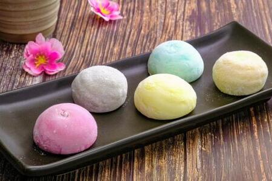
Mochi
Es un pastel japonés hecho de mochigome, un pequeño grano de arroz glutinoso.
El arroz se machaca hasta convertirlo en una pasta y se moldea con la forma deseada. En Japón se hace tradicionalmente en una ceremonia llamada Mochitsuki.
Aunque se come durante todo el año, el Mochi es un alimento tradicional del año nuevo en Japón y se consume más comúnmente durante esa temporada.
-
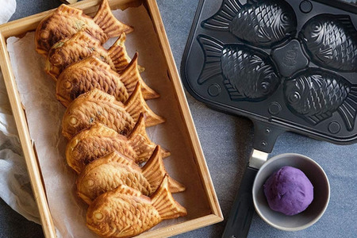
Taiyaki
Es un pastel japonés con forma de pez. El taiyaki se elabora usando rebozado de tortitas o gofre normal. El rebozado se vierte en un molde con forma de pez por ambos lados. El relleno se pone en un lado y se cierra el molde. Entonces se cocina por ambos lados hasta dorarlo.
El relleno más frecuente es la pasta de judías dulces, elaborada con judías azuki endulzadas. Otros rellenos comunes pueden ser la crema pastelera, el chocolate o el queso.
-
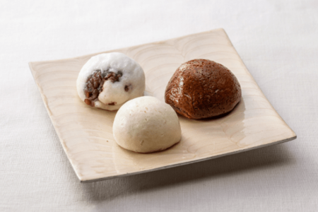
Kuri Manjuu
Es un dulce japonés que suele tener forma de bola o imitando la forma de la castaña (kuri), que se consume tradicionalmente en otoño.
Está hecho de una corteza a base de harina de trigo y un relleno que combina koshi-an (pasta de judía blanca) y castaña confitada.
-
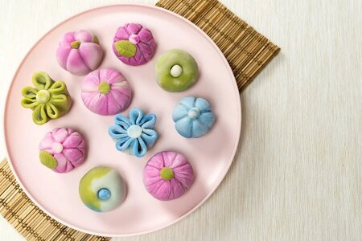
Nerikiri
Los nerikiri representan el máximo exponente del refinamiento en el arte del wagashi.
Están hechos de koshi-an blanco (pasta de judía blanca) mezclado con gyūhi, una variedad más blanda de mochi elaborada con masa de harina refinada de arroz glutinoso. Se colorean con yema de huevo y colorantes naturales como el matcha.
Suelen moldearse con de motivos de la naturaleza como flores, aves o frutas para representar las distintas estaciones del año, y se suelen servir en la ceremonia del té o en las celebraciones.
Golosinas
Si los platos salados, dulces y snacks ya te parecen geniales, cuando descubras las sorprendentes golosinas japonesas que se suelen consumir en el país nipón te vas a quedar de piedra. En Japón son amantes de la mezcla de sabores y de las diferentes texturas.
Combinando dulce con picante, un toque de salado con ácido, y sabores frutales que no has probado en tu vida, tienes una gran variedad de caramelos, gomitas, chicles y galletas de todo tipo que no existen en ningún otro país del mundo.
Cada vez son más las tiendas que distribuyen golosinas japonesas online. Algunas incluso las puedes comprar en Amazon, pero otras solo están a la venta en su país de origen.
Aprovecha tu viaje a Japón para probar todas las cosas que puedas, y traer los souvenirs más curiosos a tu familia y amigos.
-
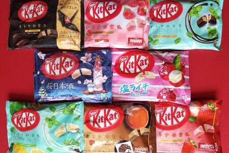
Kit Kat
Lo curioso de los kit kats es que son uno de los souvenirs que casi todos nos traemos de Japón. ¿Por qué? Pues porque los hay de sabores tan raros y distintos como té matcha, castaña, tarta de manzana o boniato.
-
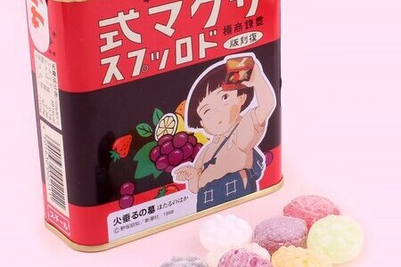
Sakuma Drops
Si eres amante de las películas de anime de Studio Ghibli, seguramente hayas visto: La tumba de las luciérnagas. Una escena inolvidable de esta película es la de la pequeña Setsuko agitando su pequeña lata de caramelos llena de piedras, imaginando que son de verdad.
Estos caramelos son los más antiguas del país, fabricados desde 1908, que consiste en una latita dónde vienen varias piezas de diferentes colores y sabores. Con una consistencia dura, y recubiertos de una fina capa de azúcar en polvo, los caramelos Sakuma tienen su propia versión en otros países.
-
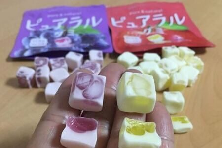
Pureral
Hechas con pulpa de fruta real, los caramelos de goma Pureral son otro de los clásicos de los caramelos japoneses. Tienen una textura masticable densa pero blandita al mismo tiempo, además de un sabor intenso como si estuvieras degustando un zumo de frutas recién exprimido.
Estas gomitas de la marca Kabaya se parecen a las gomitas turcas, presentadas con una forma cuadrada y rebozadas en un fino polvo blanco en el exterior. pero tampoco muy marcado, ya que no tiene azúcar añadido, solo el propio que tiene la fruta con la que se elabora la gomita.
La encontrarás en paquetes de todos los colores, con letras japonesas, pero con una llamativa imagen de la fruta que le da sabor a cada gomita. Las hay de manzana, de uva, melocotón, fresa, cereza, melón, y otras muchas variedades que pueden cambiar según la zona del país en la que te encuentres.
-
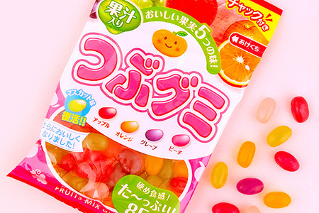
Kasugai Tsubu Gumi
Las Tsubu Gumi son uno de los dulces de Japón menos conocidos fuera del país. Esto se debe a que los paquetes solo vienen en japonés, y no se incluyen en muchas de las cajas de comida japonesa típicas de venta online.
Se venden en bolsitas con muchas unidades, mezclando muchos colores y sabores de estas pequeñas habichuelas. Presentan una textura gomosa y pegajosa en el interior, con una cubierta de azúcar crujiente por fuera. Cada una sabe de una manera diferente, pero están todas riquísimas.
Existen paquetes en miniatura para los niños, y otras versiones decoradas con personajes de manga o para fiestas especiales como Halloween o navidad.